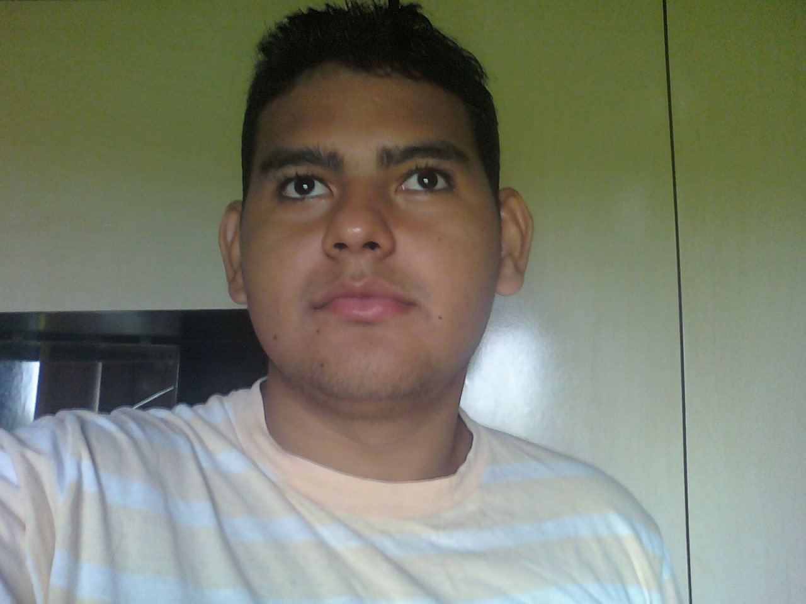

QUEM SOU EU?
Olá, eu sou o VILHALVA. Sou um ser humano comum, assim como você. O que eu mais gosto de fazer é ESTUDAR SOBRE QUALQUER COISA. Primeiro eu estudo profudamente um assunto (Leio livros / Faço cursos Presenciais e/ou Online). Assim que domino o tema, passo a questionar. Não importa o quão bom seja o professor, sempre terão coisas que irei discordar. Por isso não tenho ideologia e nem sou fã de nada e nem de niguém (Todos os humanos falham. A decepção é inevitável). Sou um livre pensador, sigo apenas a minha cabeça. Caso eu tenha uma teoria de algo, que for refutado por alguém, sempre estarei aberto para me desfazer dos meus dogmas.
Assim como eu sou como aluno: Como professor, é meu dever despertar esse tipo de interesse nos meus alunos. Eles precisam aprender a pensar sozinhos, a me questionar, e melhor, duvidar das minhas teses. Esse é um sinal de um aprendizado saudavel.
Também gosto de ouvir músicas: Sertanejo, Rock, Pop, Internacional e Gospel. Nunca presto atenção na letra, apenas na frequência com que os instrumentos mudam do MONO R para MONO L (E também nos códigos binários). Só passo a prestar mais atenção na letra, caso precise cantar a música.
Não gosto muito de assistir filmes, séries e nem jogar Video Games. Acho isso uma perca de tempo. Eu gosto de aproveitar o meu tempo livre produzindo algo, aprendendo coisas novas. Seria mais divertido criar o proprio jogo do que jogar jogos que foram produzidos por outros (Ao invés de gastar dinheiro, poderia está trabalhando para ganhar mais dinheiro).
Muitas pessoas sentem inveja do elevado grau de conhecimento que possuo em diversas áreas (Me chamam até de arrogante). Mas o que a maioria dos ignorantes não sabem, é que o conhecimento é apenas uma ferramenta que você pode usar para crescer na vida, nada mais. Nesse aspecto, confesso que me sinto muito solitário: Ninguém que eu conheça (Geograficamente / Moram na mesma região que eu), é inteligente o suficiente para me ensinar algo. Estou cercado de pessoas que são apenas mais do mesmo (Parecem NPCs), essas pessoas são legais e guerreiras na vida, mas só. Não dá para conversar com elas sobre algo realmente interessante. Tentar conversar sobre Filosofia, Ciência ou Tecnologia é impossivel; Só sabem falar delas mesmas e dos outros. Mas, ainda bem que temos a internet com diversas comunidades reunidos em várias partes do mundo com o mesmo enteresse. Não existe nada mais gratificante que conversar com uma pessoa mais inteligente do que eu (Isso é uma benção).
Não sou casado e nem pretendo (Apoio alguns pontos do MGTOW). Também não gosto muito de interação social. Na maioria dos casos, só falo com estranhos se for necessário. Não gosto de farras e nem festas. Não bebo bebidas alcóolicas, não fumo e nem uso drogas. A maior parte da minha rotina é ficar em casa, desenvolvendo diversos projetos e estudando.
Bom. Esse foi um pequeno resumo de como sou. Não sou melhor do que você, e nem pretendo ser; Mas ser eu mesmo.
COMO CRIEI O SITE?
O site foi feito totalmente na mão. Não peguei o codigo de ninguem e copiei e colei (Se eu tivesse feito isso, teria dado os devidos créditos no menu anterior). Também Eu sei que peguei muito pesado com relação as cores e os efeitos do CSS (Muito colorido); Mas decedir fazer algo bem diferente. Eu estava um pouco enjoado de ver todos os sites tendo o mesmo molde (Branco, Preto, Cinza), nada contra; Todos os sites são muito melhores que o meu em todo os aspectos. Então, você pode até não gostar desse meu primeiro projeto (Eu te entendo, e até te respeito), mas acontece que ele foi feito baseado no meu gosto pessoal. Sendo assim, podemos conviver numa boa, mesmo tendo gostos e opiniões divergentes.
Eu reunir tudo o que eu aprendir em desenvolvimento web até aqui com o meu querido professor: Gustavo Guanabara (Não sei se em algum dia esse link chegará até você. Caso chegue, eu digo: Muito obrigado pelas aulas! Você é o cara!). Também quero agradacer novamente ao grupo e ao site "Os Programadores" e a empresa "Inmetrics" por ter me doado o meu primeiro PC. Sem vocês, esse site nunca seria possivel.
HABILIDADES:
- Professor de Teologia;
- Professor Secular;
- Pregador;
- Mecânico;
- Programador;
- Desenvolvedor;
- Cantor;
- Produtor Musical;
- Compositor;
- Escritor;
- Redator.